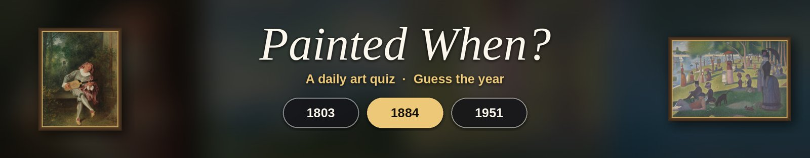

A daily art quiz: guess the year.
Painted When? is a YouTube channel that posts short art quizzes every day. Each video zooms in on a famous painting, pulls back to reveal the whole work, and asks you to pick the year it was painted from three choices.
Watch on YouTube: @painted-when
Latest quizzes
 Quiz #25
By the Seashore
Pierre-Auguste Renoir
Quiz #25
By the Seashore
Pierre-Auguste Renoir
 Quiz #24
Portrait of a Man in Costume
Jean-Honoré Fragonard
Quiz #24
Portrait of a Man in Costume
Jean-Honoré Fragonard
 Quiz #23
Cottage Children (The Wood Gatherers)
Thomas Gainsborough
Quiz #23
Cottage Children (The Wood Gatherers)
Thomas Gainsborough
 Quiz #22
Mrs. Charles Gifford Dyer (Mary Anthony)
John Singer Sargent
Quiz #22
Mrs. Charles Gifford Dyer (Mary Anthony)
John Singer Sargent
 Quiz #21
Henry Rice
Gilbert Stuart
Quiz #21
Henry Rice
Gilbert Stuart
 Quiz #20
Madame de Pastoret and Her Son
Jacques Louis David
Quiz #20
Madame de Pastoret and Her Son
Jacques Louis David
 Quiz #19
Francesco d'Este (born ca. 1429, died after 1486)
Rogier van der Weyden
Quiz #19
Francesco d'Este (born ca. 1429, died after 1486)
Rogier van der Weyden
 Quiz #18
The Assumption of the Virgin
El Greco
Quiz #18
The Assumption of the Virgin
El Greco
 Quiz #17
Two Women
Paul Gauguin
Quiz #17
Two Women
Paul Gauguin
 Quiz #16
Mountain Brook
Albert Bierstadt
Quiz #16
Mountain Brook
Albert Bierstadt
 Quiz #15
A Knight of Alcántara or Calatrava
Bartolomé Esteban Murillo
Quiz #15
A Knight of Alcántara or Calatrava
Bartolomé Esteban Murillo
 Quiz #14
St. Albert of Louvain
Peter Paul Rubens
Quiz #14
St. Albert of Louvain
Peter Paul Rubens
Where the paintings come from
All artworks are in the public domain and come from the Open Access collections (CC0) of The Metropolitan Museum of Art (Collection API) and the Art Institute of Chicago (API). This channel is not affiliated with or endorsed by either museum.
Painted When? Uploader
The videos are generated and uploaded automatically by a small open-source program, Painted When? Uploader (source code on GitHub). It uses the YouTube Data API only to upload the daily video to the channel owner's own YouTube channel and to confirm that it is uploading to the right channel. It is not offered to other users and does not access anyone else's YouTube account.
See the Privacy Policy and Terms of Service for details.